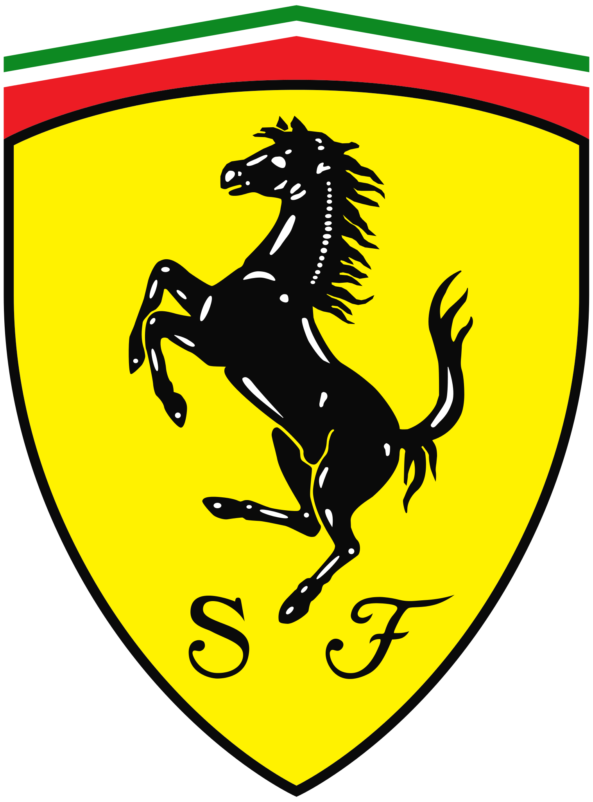
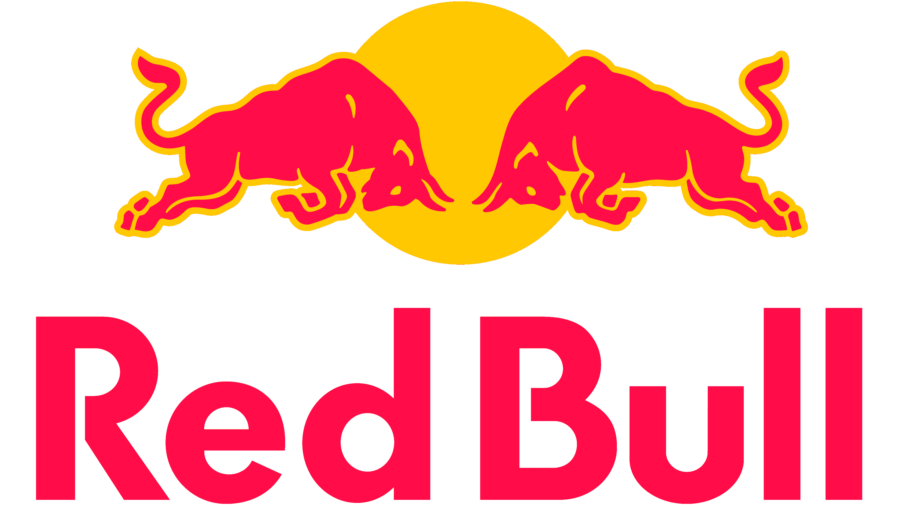

Escuderías más existosas
FERRARI

Ferrari, la escudería más icónica de la Fórmula 1, tiene una rica historia que se remonta a 1929 cuando Enzo Ferrari fundó Auto Avio Costruzioni.
Su participación oficial en la F1 comenzó en la temporada inaugural en 1950, y desde entonces, ha sido un pilar fundamental.
Ferrari ostenta un impresionante historial de éxitos. Con 16 títulos de constructores y 15 títulos de pilotos, es sinónimo de la grandeza en la F1.
Destacan épocas doradas, como la era de Michael Schumacher, quien llevó a Ferrari a un dominio inigualable en la década de 2000.
Alguno de los pilotos que han pilotado para Ferrari
Michael Schumacher
Fernando Alonso
Sebastian Vettel
Kimi Raikkonen
Charles Leclerc
Felipe Massa
Juan Manuel Fangio
Mike Hawthorn
Niki Lauda
RED BULL

Red Bull Racing, fundado en 2005, irrumpió en la Fórmula 1 con un enfoque fresco y una mentalidad innovadora.
La asociación con Red Bull, conocida por su patrocinio audaz, ha sido clave.
Red Bull ha marcado su nombre en la historia de la F1 con cuatro títulos consecutivos de constructores y pilotos bajo la dirección de Sebastian Vettel.
Su enfoque en el diseño aerodinámico y la juventud ha traído nuevos aires al deporte.
Alguno de los pilotos que han pilotado para RedBull
Sebastian Vettel
Max Verstappen
Checo Pérez
Mark Webber
Daniel Ricciardo
David Coulthard
MERCEDES

Mercedes, con una presencia intermitente en la F1, regresó como equipo de fábrica en 2010.
Su asociación con McLaren en la década de 1990 (como suministrador de motores) dejó huella.
Desde 2014, Mercedes ha redefinido la excelencia en la F1, asegurando siete títulos consecutivos de constructores y pilotos de manera consecutiva.
La combinación de innovación técnica y talento ha sido su fórmula del éxito
Alguno de los pilotos que han pilotado para Mercedes
Lewis Hamilton
George Russell
Nico Rosberg
Valteri Bottas
Michael Schumacher
Juan Manuel Fangio
MCLAREN

McLaren, fundada en 1963 por Bruce McLaren, es un nombre venerado en la F1.
A lo largo de los años, ha experimentado épocas de dominio y desafíos.
Con ocho títulos de constructores y 12 títulos de pilotos, McLaren ha vivido momentos icónicos,
especialmente durante la intensa rivalidad entre Ayrton Senna y Alain Prost en la década de 1980.
Alguno de los pilotos que han pilotado para Mclaren
Lewis Hamilton
Fernando Alonso
Ayrton Senna
Alain Prost
Niki Lauda
Jenson Button
Lando Norris
James Hunt
Emerson Fittipaldi